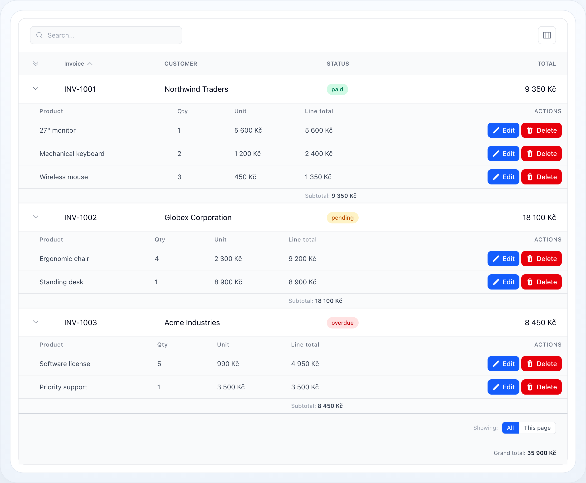

Table
Sub-Rows
Sub-rows render related child records in an expandable panel below each parent row. Use them when users need to drill into detail — an invoice's line items, an order's shipments, a project's tasks — without leaving the table.


Limited child rows with the per-parent “show more” affordance.

A per-child interactive filter bar above the sub-row table.

Every child record rendered inline as a regular table row.
On this page
- Basic Setup
- When to Use Them
- Only Some Records Have Children
- Hiding Rows That Simply Have None
- Expand and Collapse
- Sortable Child Rows
- Limit and "Show More"
- Filter the Child Query
- Filter by Sub-Row Values from Table Filters
- Building the Diagram
- Row Actions
- Per-Parent Subtotals
- Start Fully Expanded
- Detail-Row Mode (No Relation)
- Custom View
- Performance: Eager Loading
- Option Reference
- Related Docs
Sub-rows render related child records in an expandable panel below each parent row. Use them when users need to drill into detail — an invoice's line items, an order's shipments, a project's tasks — without leaving the table.
┌───┬────────────┬──────────────┬───────────┬──────────────┐│ ▾ │ INV-1001 │ Northwind │ paid │ 9 350 Kč │ ← parent row│ └──────────────────────────────────────────────────────┐│ Product Qty Unit Line total Actions│ ← child table│ 27" monitor 1 5 600 Kč 5 600 Kč [✎][🗑] ││ Keyboard 2 1 200 Kč 2 400 Kč [✎][🗑] ││ Wireless mouse 3 450 Kč 1 350 Kč [✎][🗑] ││ Subtotal: 9 350 Kč │ ← per-parent total│ └──────────────────────────────────────────────────────┘│ ▸ │ INV-1002 │ Globex │ pending │ 18 100 Kč │└───┴────────────┴──────────────┴───────────┴──────────────┘Basic Setup
use NyonCode\WireTable\Columns\TextColumn;use NyonCode\WireTable\Table; public function table(Table $table): Table{ return $table ->model(Invoice::class) ->columns([ TextColumn::make('number')->label('Invoice')->sortable(), TextColumn::make('customer')->label('Customer'), TextColumn::make('total')->money(), ]) ->subRows('items') // Eloquent relationship method ->subRowColumns([ // columns for the child table TextColumn::make('product')->label('Product'), TextColumn::make('quantity')->numeric()->label('Qty'), TextColumn::make('unit_price')->money()->label('Unit'), ]);}subRows('items') expects a relationship method (items()) on the parent model.
The child columns are independent of the parent columns — they can be entirely
different fields.
When to Use Them
Use sub-rows when:
- a parent record owns a small set of child records,
- users need quick drill-down without route changes,
- the child data shares the same decision context as the parent row.
Avoid them when the child set is large enough to deserve its own table with its own filters and pagination — sub-rows are a detail affordance, not a second grid.
Only Some Records Have Children
subRows() is a table-level switch, so by default every row gets an expand
chevron. In a table mixing record kinds that promises children a row can never
have. subRowsVisible() decides it per record:
->subRows('items')->subRowsVisible(fn (Order $record) => $record->isPiecework());Records the condition rejects lose their chevron, their child panel and their share of the eager load. The expander cell still renders — empty — because dropping it would shift every other column on that row.
This is not the same as "has no children right now": a record that may have
children but currently has none still expands, to the no_sub_rows message. Use
the condition for records that structurally cannot have any.
The result is memoized per record for the request, so the callback may query — but prefer something already on the record.
Hiding Rows That Simply Have None
For the most common condition — "this record has no children right now" — use
subRowsHideWhenEmpty() instead of writing the closure yourself:
->subRows('items')->subRowsHideWhenEmpty();Written by hand this costs one COUNT per row. The flag instead has the table's
own query carry a constrained count of the sub-row relation, so the per-row check
is an attribute read — no extra query for a rendered page. A record handed
straight to the table (not fetched through its query) falls back to one EXISTS.
The count is constrained exactly as the panel is — subRowQuery() and any
Filter::subRows() — so a parent whose children are
all filtered out loses its expander rather than opening onto the empty-state
message. The interactive per-child filter bar (subRowsFilterable()) is
deliberately not folded in: those values change per parent as the user types,
and the expander would appear and disappear under the cursor.
Both conditions compose, and the cheap one runs first — a record
subRowsVisible() has already rejected is never counted:
->subRowsVisible(fn (Order $record) => $record->isPiecework())->subRowsHideWhenEmpty();Expand and Collapse
->subRowsExpandable() // user can toggle (default true)->subRowsDefaultExpanded() // start expanded->subRowsExpandable(false) // always open, no toggle->subRowsToggleLabel('Show items') // label for the toggle columnExpansion is one state, not two: a baseline says whether rows start open, and
Livewire state lists only the rows that differ from it. subRowsDefaultExpanded()
sets the baseline; the user moves it with the master chevron in the expander
column header — the icon directly above the row chevrons:
┌───┬────────────┬──────────────┐│ » │ INVOICE │ TOTAL │ » master chevron: open / close everything├───┼────────────┼──────────────┤│ › │ INV-1001 │ 9 350 Kč │ › per-row chevron│ › │ INV-1002 │ 18 100 Kč │└───┴────────────┴──────────────┘Three ways to reach it, one state behind them:
| Control | Where |
|---|---|
| Master chevron | Header of the expander column |
| ⌥/Alt-click a row chevron | Any row — the spreadsheet shortcut |
| Expand on every row | View menu (the ⊞ button), and the only bulk control on a phone, where the stacked card layout has no header row |
Because the baseline is a mode rather than a list of keys, it also covers rows on
pages the user has not visited yet. With rememberColumns() enabled the choice is
stored per user alongside the column layout.
Sortable Child Rows
Let users sort the child table by clicking its column headers, with an optional default sort applied before any interaction:
->subRowsSortable(default: 'line_total', direction: 'desc')Product ↕ Qty ↕ Unit ↕ Line total ▼ ← ▼ active sort, ↕ sortable─────────────────────────────────────────27" monitor 1 5 600 Kč 5 600 KčKeyboard 2 1 200 Kč 2 400 KčWireless ... 3 450 Kč 1 350 KčOnly columns present in subRowColumns() may be sorted — arbitrary column names
are rejected, so the sort is safe to drive from the request. Clicking the active
column flips the direction; clicking another sorts it ascending. The active sort
is shared across all expanded parents.
Limit and "Show More"
->subRowsLimit(5)When a limit is set and more children exist, a "Show N more" button renders at the bottom of the child table. Clicking it reveals the full set for that parent (tracked per-parent in state), while the count stays accurate.
The eager load fetches only limit rows per parent (native per-parent
eager-load limit) plus one count query for the exact totals — full child sets
are never loaded into memory unless a parent is expanded via "Show more":
Product Qty Line total───────────────────────────────Keyboard 2 2 400 KčWireless mouse 3 1 350 Kč Show 1 more ← appears because limit (2) < total (3)Filter the Child Query
Shape the underlying relationship query with subRowQuery():
use Illuminate\Database\Eloquent\Builder; ->subRowQuery(fn (Builder $query) => $query ->where('active', true) ->orderBy('sort_order'))Enable per-child interactive filters with subRowsFilterable(). A filter bar
renders above the child table for any filterable sub-row column and narrows the
children — the parent rows are untouched:
->subRowsFilterable()Filter: [ Product… ] [ price from – to ] ✕ Reset───────────────────────────────────────────────────────Product Qty Line totalKeyboard 2 2 400 Kč ← only rows matching the filterFilter by Sub-Row Values from Table Filters
Mark any main-table filter with subRows() and it targets the child records
instead of parent columns — e.g. a Month/Year filter over the children's date.
The filter's column name (billed_at here) refers to the child model:
use NyonCode\WireTable\Filters\DateFilter; ->filters([ DateFilter::make('billed_at')->month()->subRows(),])One filter constrains everything consistently:
- parents shrink to those having at least one matching child,
- expanded panels show only the matching children,
- per-parent subtotals, "show more" counts, rollup columns (
->sums(),->counts(), …) and their footer grand totals all aggregate only the matching children.
Měsíc: [ 2026-06 ▾ ]┌───┬────────────┬──────────────┐│ ▾ │ INV-1001 │ 5 000 Kč │ ← rollup counts June items only│ └── June item A … June item B ──┘│ ▾ │ INV-1003 │ 5 000 Kč │ ← INV-1002 (May only) is gone└───┴────────────┴──────────────┘│ Celkem: │ 10 000 Kč │ ← footer sums filtered sub-rowsBuilding the Diagram
No extra wiring is needed — the aggregates just have to be declared, and the filter narrows them automatically. There are two ways to get the totals, depending on whether the per-invoice amount should be a visible parent column:
Amount only in the sub-rows. Give the sub-row column a per-parent subtotal
(scope: 'subRows') and a default-scope summary for the grand total — the
latter renders in the main footer, computed in SQL over exactly the children
the filter allows (see
Grand totals from sub-row columns):
$table ->subRows('items') ->subRowColumns([ TextColumn::make('product'), TextColumn::make('line_total') ->suffix(' Kč') ->summaryDecimals(0) ->summarizeSum('Subtotal', scope: 'subRows') // panel footer per invoice ->summarizeSum('Celkem'), // main footer, filtered children ]) ->filters([ DateFilter::make('billed_at')->month()->subRows(), ]);Amount as a parent column. Use a rollup column
over the same relation as subRows() — the relation match is what lets the
filter constrain it. The cell then shows each invoice's total of matching
items (the 5 000 Kč column in the diagram), and its summary is the footer
grand total. A stored parent attribute like $invoice->total would not
react to the filter — that's exactly what the rollup replaces:
$table ->columns([ TextColumn::make('number')->label('Invoice'), TextColumn::make('items_total') ->label('Total') ->sums('items', 'line_total') // same relation as ->subRows('items') ->suffix(' Kč') ->summaryDecimals(0) ->summarizeSum('Celkem'), ]) ->subRows('items') ->filters([ DateFilter::make('billed_at')->month()->subRows(), ]);The rollup constraint is keyed by relation name: a rollup over a different
relation (say ->counts('payments')) is untouched by an items-scoped filter
and keeps aggregating all of its children.
See Filters — Filtering by Sub-Row Values.
Row Actions
Render per-child actions in a trailing actions cell. Each action renders against the child record, exactly like main-table actions render against a parent:
use NyonCode\WireCore\Actions\Action;use NyonCode\WireCore\Actions\DeleteAction; ->subRowActions([ Action::make('edit')->label('Edit')->icon('pencil')->color('primary'), DeleteAction::make(),])Product Qty Line total Actions─────────────────────────────────────────────27" monitor 1 5 600 Kč [✎ Edit][🗑 Delete]Keyboard 2 2 400 Kč [✎ Edit][🗑 Delete]Per-Parent Subtotals
Give a sub-row column a subRows-scoped summary and the child table grows a
footer with that aggregate for the parent's children:
->subRowColumns([ TextColumn::make('product')->label('Product'), TextColumn::make('quantity')->numeric()->summarizeSum(scope: 'subRows'), TextColumn::make('line_total') ->numeric(0) ->suffix(' Kč') ->summaryDecimals(0) ->summarizeSum('Subtotal', scope: 'subRows'),])Product Qty Line total───────────────────────────────27" monitor 1 5 600 KčKeyboard 2 2 400 KčWireless mouse 3 1 350 KčSubtotal: 6 9 350 Kč ← per-parent footerAll aggregate types and number formatting from the Summaries page
apply here. To total across all parents in the main footer, add a second,
default-scoped summary to the same sub-row column —
->summarizeSum('Celkem') — or give a parent rollup column its own summary.
See Grand totals from sub-row columns
and Grand totals across all children.
Start Fully Expanded
To open every parent's sub-rows from the first render — handy for review and scanning where you want all detail visible together:
->subRowsDefaultExpanded()┌───┬────────────┬──────────────┐│ ⌄ │ INV-1001 │ 9 350 Kč │ every invoice is expanded,│ └── Monitor … Keyboard … ───┘ not just the one the user clicked│ ⌄ │ INV-1002 │ 18 100 Kč ││ └── Desk … Chair … ─────────┘└───┴────────────┴──────────────┘This is only the starting point — the master chevron and the view menu move the baseline either way at runtime.
flattenSubRows()is a deprecated alias ofsubRowsDefaultExpanded(). Despite the name it never rendered children as flat rows; it was a second flag with the same visible effect, and having both meant "Collapse all" could not close what flatten mode held open.toggleFlattenMode()still works and now callstoggleAllRowExpansion().
Detail-Row Mode (No Relation)
Skip subRows() entirely and provide only a child view: the expanded panel then
renders the parent record itself — ideal for a detail card. Sub-rows activate
as soon as subRowView() (or subRowColumns()) is set, even without a relation:
->subRowView('components.users.detail') // no subRows() call → detail-row mode┌───┬────────────┬──────────┐│ ▾ │ Alice │ Active ││ └──────────────────────────────────┐│ Email: alice@example.com │ ← your custom Blade│ Phone: +420 777 123 456 ││ └──────────────────────────────────┘└───┴────────────┴──────────┘Custom View
Replace the default child renderer entirely when the data is not naturally tabular:
->subRowView('components.orders.sub-rows')The view receives $table, $component, $record (parent), $subRows
(children collection), and layout variables.
Performance: Eager Loading
Sub-rows are loaded for the whole page in a single query rather than one query per expanded parent:
- Everything expanded — every parent's children load at once.
- Otherwise — only the currently expanded parents are loaded.
This removes the N+1 that would otherwise grow with the number of open rows. Reading a parent's children (and its subtotal count) then costs no extra queries. Eager loading is automatically skipped while interactive sub-row filters are active, since per-parent filtering falls back to a safe per-parent query.
Option Reference
| Method | Purpose |
|---|---|
subRows(string $relation) |
Enable sub-rows from a relationship (omit it + set subRowView/subRowColumns for detail-row mode) |
subRowsVisible(Closure|bool) |
Restrict sub-rows to the records that can have children |
subRowsHideWhenEmpty(bool) |
Drop the expander from records with no children (counted in the table query) |
subRowColumns(array $columns) |
Columns for the child table |
subRowQuery(Closure $cb) |
Shape the child relationship query |
subRowsSortable(bool, ?string $default, string $direction) |
Click-to-sort headers + default sort |
subRowActions(array $actions) |
Per-child row actions |
subRowsLimit(?int) |
Cap children, enabling "Show N more" |
subRowsFilterable(bool) |
Per-child interactive filter bar |
subRowsExpandable(bool) |
Allow expand/collapse toggle |
subRowsDefaultExpanded(bool) |
Start expanded |
subRowsToggleLabel(?string) |
Label for the toggle column |
flattenSubRows(bool) |
Deprecated alias of subRowsDefaultExpanded() |
subRowView(string) |
Custom child renderer |
Related Docs
- Summaries — aggregate types, scopes, formatting, rollups
- Table Overview
- Columns
- Actions